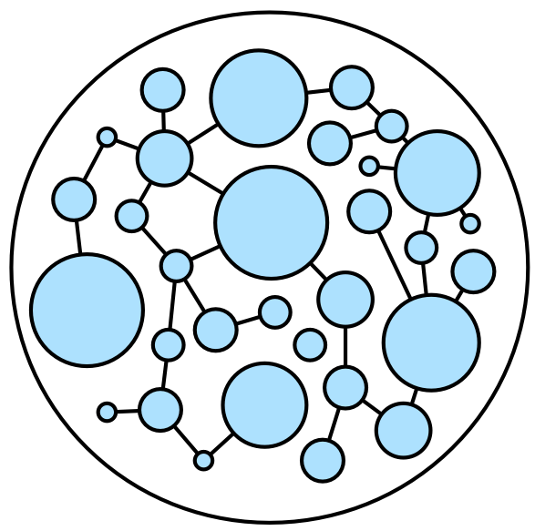
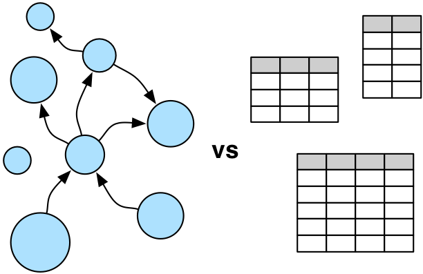

The Benefits of Graph Computing
 A graph is a structure composed of vertices and edges. Both vertices and edges can have an arbitrary number of key/value-pairs called properties. Vertices denote discrete objects such as a person, a place, or an event. Edges denote relationships between vertices. For instance, a person may know another person, have been involved in an event, and/or have recently been at a particular place. Properties express non-relational information about the vertices and edges. Example properties include a vertex having a name and an age, and an edge having a timestamp and/or a weight. Together, the aforementioned graph is known as a property graph and it is the foundational data structure of Apache TinkerPop.
If a user's domain is composed of a heterogeneous set of objects (vertices) that can be related to one another in a multitude of ways (edges), then a graph may be the right representation to use. In a graph, each vertex is seen as an atomic entity (not simply a "row in a table") that can be linked to any other vertex or have properties added or removed at will. This empowers the data modeler to think in terms of actors within a world of complex relations as opposed to, in relational databases, statically-typed tables joined in aggregate. Once a domain is modeled, that model must then be exploited in order to yield novel, differentiating information. Graph computing has a rich history that includes not only query languages devoid of table-join semantics, but also algorithms that support complex reasoning: path analysis, vertex clustering and ranking, subgraph identification, and more. The world of applied graph computing offers a flexible, intuitive data structure along with a host of algorithms able to effectively leverage that structure.
 Apache TinkerPop™ is an open source, vendor-agnostic, graph computing framework distributed under the commercial friendly Apache2 license.
When a data system is TinkerPop-enabled, its users are able to model their domain as a graph and analyze that graph using the Gremlin graph traversal language.
Furthermore, all TinkerPop-enabled systems integrate with one another allowing them to easily expand their offerings as well as allowing users to choose the appropriate graph
technology for their application. Sometimes an application is best served by an in-memory, transactional graph database. Sometimes a multi-machine distributed graph database will do the job.
Or perhaps the application requires both a distributed graph database for real-time queries and, in parallel, a Big(Graph)Data processor for batch analytics. Whatever the application's
requirements, there exists a TinkerPop-enabled graph system out there to meet its needs.
Apache TinkerPop™ is an open source, vendor-agnostic, graph computing framework distributed under the commercial friendly Apache2 license.
When a data system is TinkerPop-enabled, its users are able to model their domain as a graph and analyze that graph using the Gremlin graph traversal language.
Furthermore, all TinkerPop-enabled systems integrate with one another allowing them to easily expand their offerings as well as allowing users to choose the appropriate graph
technology for their application. Sometimes an application is best served by an in-memory, transactional graph database. Sometimes a multi-machine distributed graph database will do the job.
Or perhaps the application requires both a distributed graph database for real-time queries and, in parallel, a Big(Graph)Data processor for batch analytics. Whatever the application's
requirements, there exists a TinkerPop-enabled graph system out there to meet its needs.